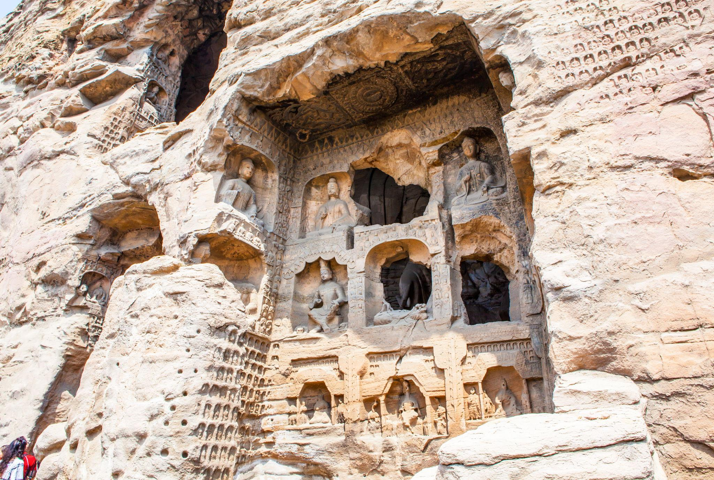
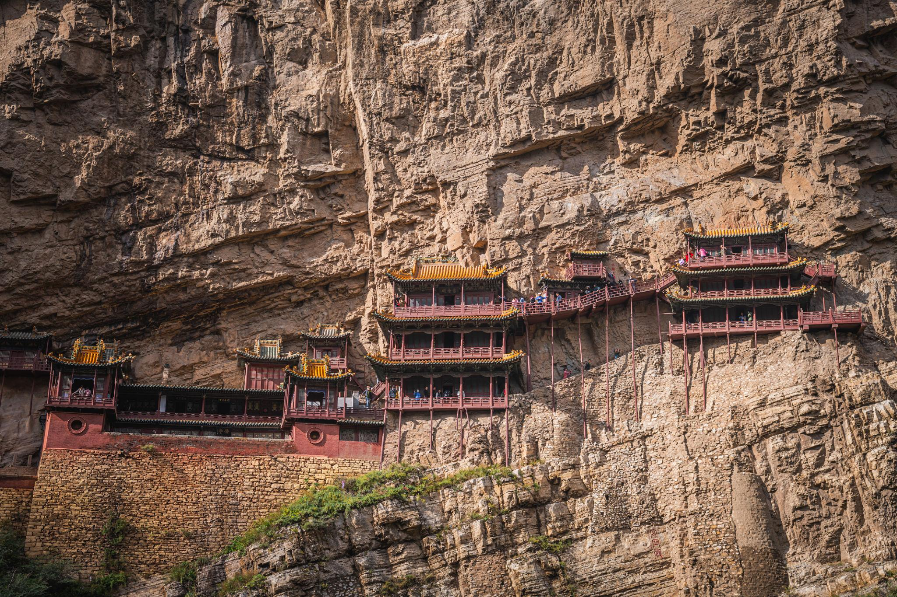
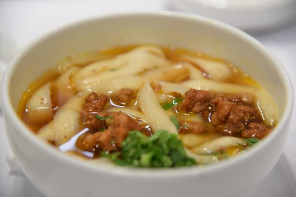
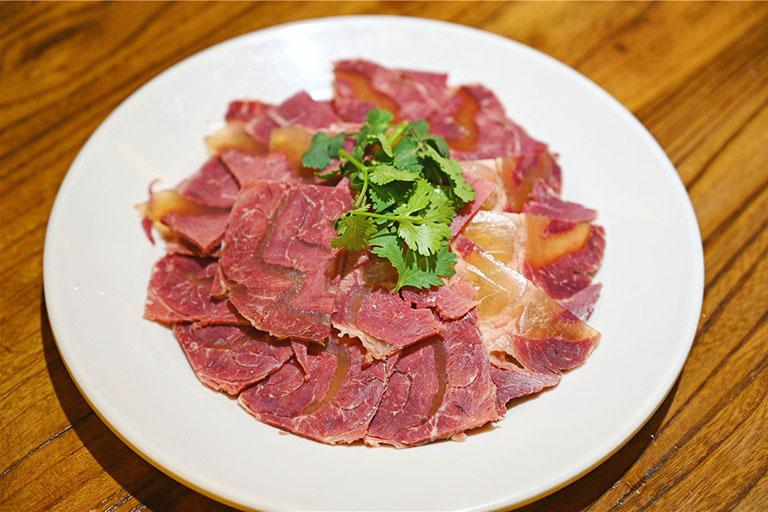
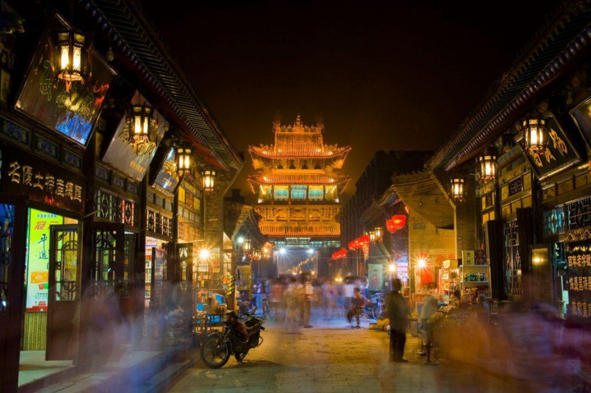
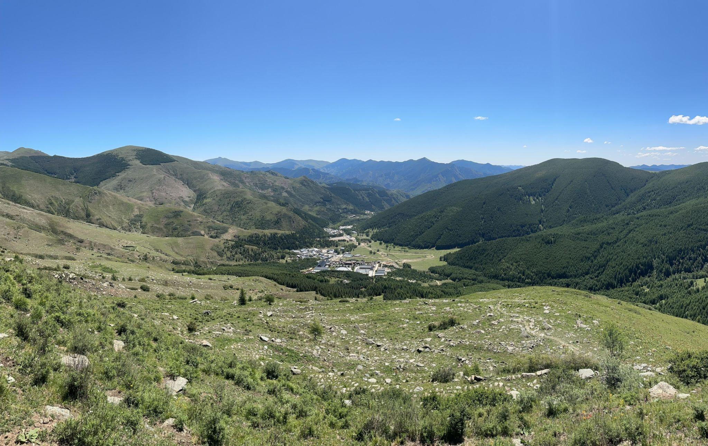
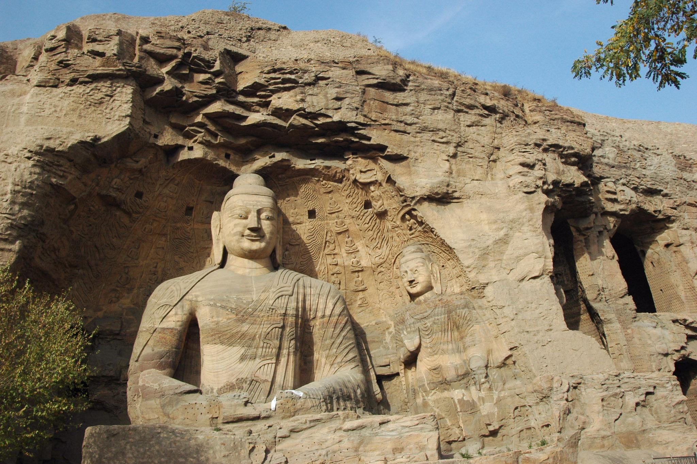

Historic Heritage
The detailed carvings of the Yungang Grottoes reflect the deep artistic and religious history of Shanxi.
Explore More
This page gives a closer look at the attractions, landscapes, and food culture that make Shanxi such a special place.

The detailed carvings of the Yungang Grottoes reflect the deep artistic and religious history of Shanxi.

The Hanging Temple is one of the most iconic places in Shanxi and a symbol of ancient engineering.

Handmade noodles are a classic part of Shanxi food culture and are loved across China.

Pingyao beef is one of the most famous local dishes and represents the unique taste of Shanxi cuisine.
Four Reasons to Remember Shanxi
Shanxi preserves important treasures of Chinese history, from temples to stone carvings and traditional towns.
Its mountain scenery offers fresh air, wide views, and a peaceful natural feeling.
Local noodles and beef dishes make Shanxi not only beautiful to see, but also wonderful to taste.
Lantern-lit streets, old buildings, and famous landmarks make Shanxi feel warm, historic, and welcoming.
Photo Gallery



Return to the homepage to see the introduction, highlights, and main travel features.
Back to Home